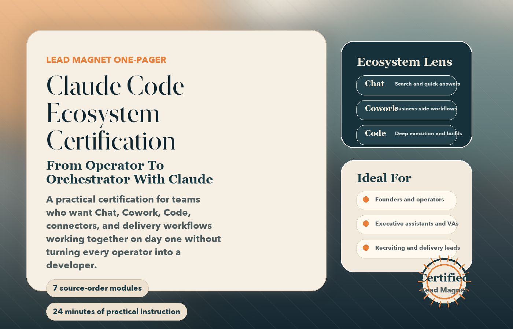

What This Is
A polished proof piece for prospects who already know AI matters.
This page turns raw training footage into a concise certification narrative you can hand to potential clients, prospects, and internal stakeholders.
Certification Lead Magnet
Claude Code Ecosystem

Built From Source Clips
Transcript-derived curriculum built in the exact usable order of the supplied exports.
What This Is
This page turns raw training footage into a concise certification narrative you can hand to potential clients, prospects, and internal stakeholders.
What It Signals
The curriculum shows setup, prompting, permissions, business connectors, and the decision layer around MCPs, skills, and CLI execution.
Why It Converts
Every module title and takeaway was derived from transcripted source exports rather than invented from scratch.
Who It Is For
What They Leave With
Source-Order Curriculum
The cards below preserve the order of the usable source clips and turn each segment into a marketable learning outcome with a title, headline, and subheadline.
Setup that reduces drag
Desktop, terminal, permissions, workspace, and browser access.
Prompts tied to business reality
Real stacks, real pain points, and real non-technical constraints.
A clear integration vocabulary
MCPs, skills, APIs, and CLI paths instead of fuzzy AI buzzwords.
Provenance